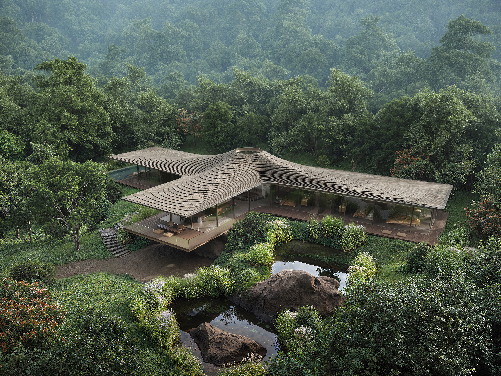
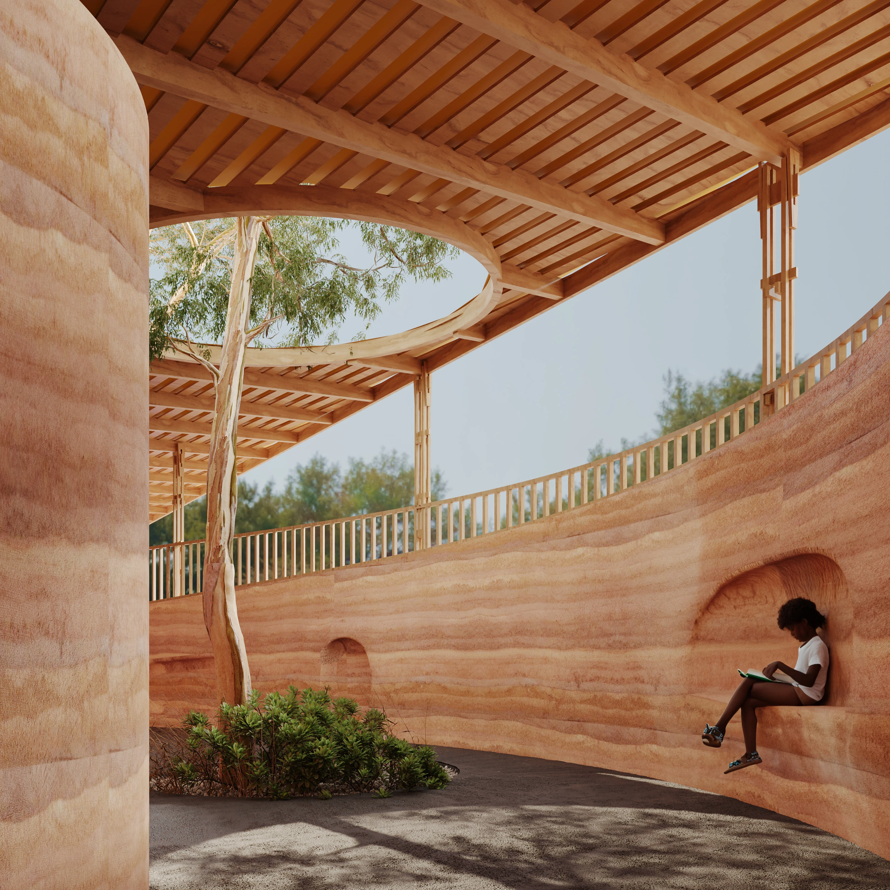

Em 1984, o arquiteto e pesquisador Roger Ulrich publicou na revista Science um experimento perturbadoramente simples.
Ele dividiu pacientes em recuperação cirúrgica em dois grupos: um com janela para uma parede de tijolos, outro com janela para uma fileira de árvores. Não havia outra diferença entre os quartos. Mesma equipe médica, mesmo protocolo, mesmo hospital.
O resultado foi inequívoco. Os pacientes com vista para as árvores receberam menos analgésicos, tiveram menos registros negativos nos prontuários e receberam alta mais cedo.
Uma janela. Algumas árvores. Dados que mudaram a forma como arquitetos e neurocientistas pensam sobre o ambiente construído.
Mas antes de falar sobre o que a ciência mede, vale perguntar o que a história já sabia — e há quanto tempo.
O que os romanos entendiam sobre pedra que esquecemos
O Coliseu, inaugurado no ano 80 d.C., foi erguido predominantemente com travertino — uma calcária porosa extraída das pedreiras de Tivoli, a 30 quilômetros de Roma.
A escolha não foi estética. Foi técnica e climática. O travertino é durável, e os romanos demonstravam uma compreensão sofisticada de como manipular cada material para obter os resultados estruturais e estéticos desejados. Ele regula temperatura. Respira. Absorve calor durante o dia e o libera à noite. Numa arena que comportava até 80 mil pessoas, essa propriedade não era detalhe — era engenharia de conforto.
Dois mil anos depois, o travertino está de volta às listas de materiais preferidos do mercado de alto padrão global. Não por nostalgia. Porque funciona.
Os romanos chegaram a essa conclusão sem dados laboratoriais. Chegaram por observação, por repetição, por respeito ao comportamento intrínseco de cada material. Deixavam a pedra se dividir como queria e trabalhavam com o grão. Essa escolha explica por que certas paredes ainda estão de pé quando muitas construções modernas desmoronam em décadas.
Paciência com o material. Confiança na sua natureza.
O Japão e a inteligência do imperfeito
Enquanto Roma dominava a pedra, o Japão desenvolveu uma relação diferente — mais filosófica, talvez mais radical — com a madeira.
A proximidade atenta com a natureza desenvolveu e reforçou uma estética que, em geral, evitava o artifício. As qualidades naturais dos materiais eram tratadas como parte integrante do significado total de qualquer obra. Quando a escultura budista japonesa do século IX migrou do bronze e do estuque para a madeira crua e sem policromia, não foi um retrocesso técnico. Foi uma declaração de valores.
A madeira não era suporte. Era o próprio conteúdo.

Essa lógica se estendeu às casas, aos templos, às cidades inteiras. A madeira, o bambu e o papel eram os materiais primários, refletindo tanto os recursos naturais abundantes do Japão quanto sua ênfase em sustentabilidade. As junções carpinteiras japonesas — encaixes sem prego que flexionam diante de terremotos em vez de romper — são estudadas até hoje em programas de engenharia estrutural. O que parece artesanato é, na prática, física aplicada com precisão milimétrica.
A arquitetura japonesa foi projetada para o clima. Nenhum prego, apenas cortes que dobram. Beirais profundos e revestimento carbonizado resultaram em madeira que dura séculos.
Shou sugi ban — a técnica de carbonizar a superfície da madeira para torná-la impermeável e resistente a insetos — tem pelo menos 300 anos de registro documentado no Japão. Hoje, escritórios de arquitetura em Oslo, São Paulo e Los Angeles a especificam como "inovação sustentável".
Não é inovação. É memória.
A África e o argumento do grande Zimbábue
Há um argumento silencioso no centro da África subsaariana que poucos debates sobre arquitetura de alto padrão têm a honestidade de mencionar.
O Grande Zimbábue — complexo de estruturas em pedra construído entre os séculos XI e XV pelo povo Shona — foi erguido sem argamassa, sem cimento, sem nenhum agente aglutinante. Os construtores deixavam a pedra se dividir como queria e trabalhavam com o grão. Essa escolha explica por que a estrutura ainda está de pé quando muitas construções modernas não sobrevivem a uma geração.

Muros de seis metros de altura, com mais de 250 metros de comprimento, erguidos a partir do encaixe preciso de blocos de granito irregular. A lógica era simples: entender o material melhor do que qualquer instrumento poderia descrever, e deixar que ele ditasse a forma.
Quando colonizadores europeus chegaram e se depararam com o Grande Zimbábue no século XIX, muitos recusaram-se a aceitar que tivesse sido construído por africanos. Preferiam inventar rotas comerciais imaginárias a reconhecer o óbvio: que o domínio dos materiais naturais não é privilégio de nenhuma civilização específica. É o ponto de chegada de qualquer cultura que presta atenção suficiente ao mundo ao seu redor.
A ruptura: 1919, Weimar, Alemanha
Por dez mil anos, arquitetura e materiais naturais foram praticamente sinônimos.
A ruptura tem data e endereço.
A partir da década de 1920, uma nova arquitetura experimental emergia. Os materiais tradicionais — pedra, tijolo e madeira — cederam espaço a novas técnicas construtivas baseadas em aço, concreto e vidro, inspiradas pelos princípios modernistas e pelo ensino da escola Bauhaus.
A Bauhaus, fundada por Walter Gropius em Weimar em 1919, tinha uma premissa sedutora: arte e indústria deveriam falar a mesma língua. O resultado foi uma geração de arquitetos que enxergava o concreto como libertação e a madeira como limitação. Ao início do século XX, arquitetos construíram os primeiros complexos habitacionais industrializados com base em aço, vidro e concreto.
O projeto era genuinamente progressista. O problema foi o que veio depois.
O que nasceu como experimento intelectual tornou-se receita global. O concreto sem memória, o vidro sem filtro, o aço sem pátina. Décadas de edifícios que não envelhecem — simplesmente deterioram. O Brutalismo, que emergiu dos escombros do pós-guerra nos anos 1950, levou esses princípios ainda mais longe, com concreto bruto exposto e formas monumentais. Em muitas cidades, os conjuntos habitacionais brutalistas — concebidos com intenção social genuína — tornaram-se sinônimo de abandono e degradação.
O concreto sem calor não aguenta o tempo. A pedra natural, sim.
O que o cérebro faz quando encontra madeira
Voltemos a Roger Ulrich — e ao que veio depois dele.
Estudos mostram que a exposição a materiais naturais, como a madeira, reduz batimentos cardíacos e níveis de cortisol. O cortisol é o hormônio central da resposta ao estresse. Quando o organismo o produz em excesso e de forma crônica — como acontece em ambientes construídos com alta estimulação visual, superfícies sintéticas e ausência de referências naturais — os efeitos incluem desde insônia até comprometimento cognitivo.
O neurocientista Matt Hill explica que nossa resposta a situações ameaçadoras não evoluiu para se adequar ao ambiente moderno. A resposta fisiológica a pressões cotidianas do trabalho é similar à resposta a ameaças de sobrevivência na natureza.
Em outras palavras: nosso sistema nervoso ainda não sabe que o escritório não é a savana.
O que a arquitetura com materiais naturais faz não é decoração. É sinalização. Fisiologicamente, a exposição a elementos naturais se traduz em pressão arterial reduzida, frequência cardíaca mais lenta e diminuição de hormônios de estresse como o cortisol. O sistema nervoso lê a pedra, a madeira e a luz natural como ausência de ameaça. Como segurança. Como lar.
Avanços em neurociência permitiram que pesquisadores utilizassem exames de ressonância magnética e aparelhos portáteis de EEG para estudar a atividade cerebral — especificamente a atividade das ondas alfa, consideradas indicadoras de um estado de vigília relaxada. Ambientes com materiais naturais elevam consistentemente a atividade alfa. Ambientes sintéticos, não.
Isso não é filosofia. É eletroencefalograma.
2026: o retorno que não é retorno
O que o mercado de alto padrão chama de tendência em 2026 é, na prática, a correção de um desvio de cem anos.
Materiais sustentáveis como madeira de demolição, aço reciclado, compostos de pedra e concreto de baixo carbono reduzem impacto sem abrir mão da beleza e da durabilidade estrutural. Esses materiais não precisam ser apresentados. Precisam ser bem escolhidos, bem especificados e bem executados.
É aí que mora a diferença real entre projetos.
Uma madeira de carvalho instalada sem aclimatação adequada empenará. Uma pedra assentada sem junta compatível com sua dilatação térmica vai fissurar em dois invernos. Um revestimento de travertino mal selado acumula umidade e escurece de forma irregular. O material natural não admite atalhos — ele revela, com o tempo, cada decisão tomada durante a obra.
Essa exigência é, paradoxalmente, sua maior qualidade. Porque o que é executado com rigor desde a fundação não pede substituição em cinco anos. Pede cuidado. E envelhece com a casa, não contra ela.
Os melhores projetos entregues neste ano — em Oslo, Tóquio, São Paulo, Lisboa — têm em comum exatamente isso: materiais que já existiam antes de qualquer tendência, aplicados por equipes que entendem o comportamento físico-químico de cada um deles.
Não é estética. É permanência.
A pergunta que define uma obra
Antes de qualquer decisão de projeto, há uma pergunta que separa a construção da arquitetura:
Este material ainda vai fazer sentido aqui daqui a quarenta anos?
Se a resposta depender de tendências, o caminho está errado. Se a resposta vier da física, da história e da compreensão de quem vai viver naquele espaço, a obra já começou da maneira correta.
Pedra, madeira e luz não são escolhas conservadoras. São as escolhas que resistiram a todos os testes — de tempo, de clima, de ciência e de civilização.
Cinco mil anos de arquitetura chegaram à mesma conclusão.
Quer continuar essa conversa?
A seleção de materiais em uma obra de alto padrão começa muito antes do projeto executivo. Começa com a compreensão do que cada material faz — fisicamente, termicamente, estruturalmente — ao longo do tempo.
Se este artigo despertou curiosidade, há caminhos que valem a exploração:
- Leia o artigo original de Roger Ulrich na Science, 1984 — "View Through a Window May Influence Recovery from Surgery"
- Pesquise Stress Recovery Theory (SRT) e Attention Restoration Theory (ART)
- Explore o conceito de shou sugi ban e o histórico documentado de técnicas carpinteiras japonesas
- Aprofunde-se na discussão sobre rastreabilidade de materiais na construção civil brasileira
Quando a pesquisa encontrar um projeto, nossa equipe está disponível para uma conversa técnica — sem roteiros, sem apresentações padronizadas.
Cada obra começa com uma escuta.
Conheça como trabalhamos →